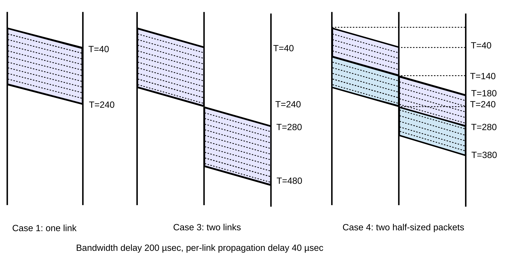
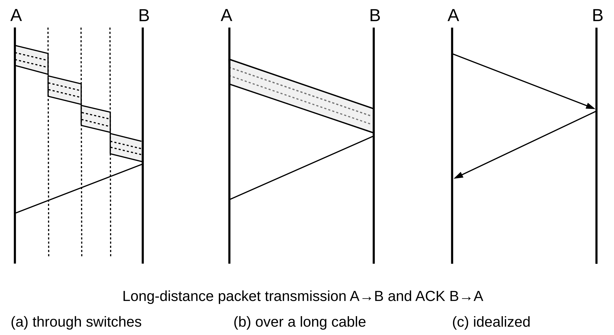
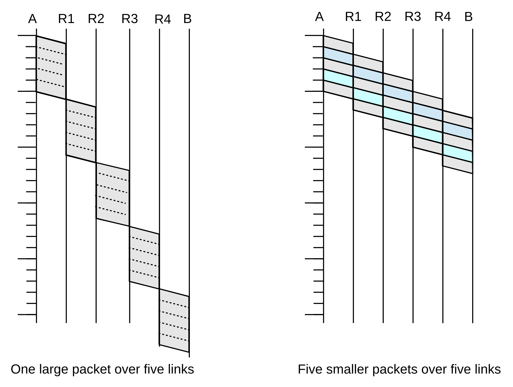
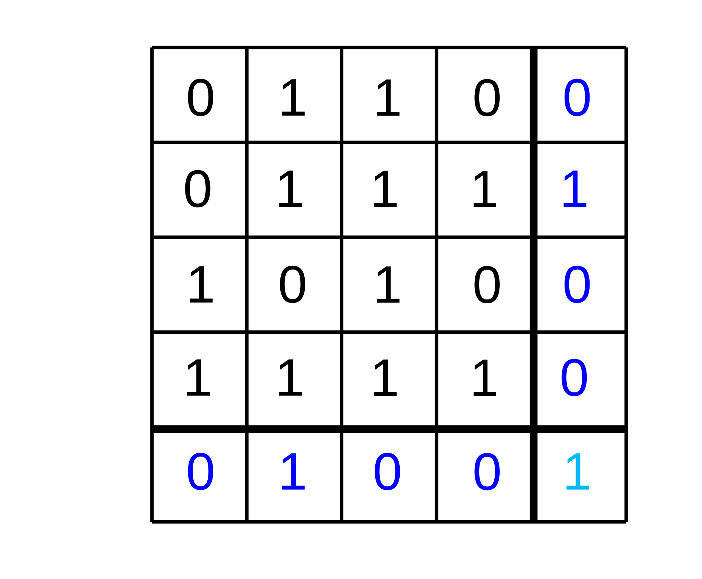

7 Packets¶
In this chapter we address a few abstract questions about packets, and take a close look at transmission times. We also consider how big packets should be, and how to detect transmission errors. These issues are independent of any particular set of protocols.
7.1 Packet Delay¶
There are several contributing sources to the delay encountered in transmitting a packet. On a LAN, the most significant is usually what we will call bandwidth delay: the time needed for a sender to get the packet onto the wire. This is simply the packet size divided by the bandwidth, after everything has been converted to common units (either all bits or all bytes). For a 1500-byte packet on 100 Mbps Ethernet, the bandwidth delay is 12,000 bits / (100 bits/µsec) = 120 µsec.
There is also propagation delay, relating to the propagation of the bits at the speed of light (for the transmission medium in question). This delay is the distance divided by the speed of light; for 1,000 m of Ethernet cable, with a signal propagation speed of about 230 m/µsec, the propagation delay is about 4.3 µsec. That is, if we start transmitting the 1500 byte packet of the previous paragraph at time T=0, then the first bit arrives at a destination 1,000 m away at T = 4.3 µsec, and the last bit is transmitted at 120 µsec, and the last bit arrives at T = 124.3 µsec.
Bandwidth delay, in other words, tends to dominate within a LAN.
But as networks get larger, propagation delay begins to dominate. This also happens as networks get faster: bandwidth delay goes down, but propagation delay remains unchanged.
An important difference between bandwidth delay and propagation delay is that bandwidth delay is proportional to the amount of data sent while propagation delay is not. If we send two packets back-to-back, then the bandwidth delay is doubled but the propagation delay counts only once.
The introduction of switches leads to store-and-forward delay, that is, the time spent reading in the entire packet before any of it can be retransmitted. Store-and-forward delay can also be viewed as an additional bandwidth delay for the second link.
Finally, a switch may or may not also introduce queuing delay; this will often depend on competing traffic. We will look at this in more detail in 20 Dynamics of TCP, but for now note that a steady queuing delay (eg due to a more-or-less constant average queue utilization) looks to each sender more like propagation delay than bandwidth delay, in that if two packets are sent back-to-back and arrive that way at the queue, then the pair will experience only a single queuing delay.
7.1.1 Delay examples¶
Case 1: A──────B
- Propagation delay is 40 µsec
- Bandwidth is 1 byte/µsec (1 MB/sec, 8 Mbit/sec)
- Packet size is 200 bytes (200 µsec bandwidth delay)
Then the total one-way transmit time for one packet is 240 µsec = 200 µsec + 40 µsec. To send two back-to-back packets, the time rises to 440 µsec: we add one more bandwidth delay, but not another propagation delay.
Case 2: A──────────────────B
Like the previous example except that the propagation delay is increased to 4 ms
The total transmit time for one packet is now 4200 µsec = 200 µsec + 4000 µsec. For two packets it is 4400 µsec.
Case 3: A──────R──────B
We now have two links, each with propagation delay 40 µsec; bandwidth and packet size as in Case 1.
The total transmit time for one 200-byte packet is now 480 µsec = 240 + 240. There are two propagation delays of 40 µsec each; A introduces a bandwidth delay of 200 µsec and R introduces a store-and-forward delay (or second bandwidth delay) of 200 µsec.
Case 4: A──────R──────B
The same as 3, but with data sent as two 100-byte packets
The total transmit time is now 380 µsec = 3x100 + 2x40. There are still two propagation delays, but there is only 3/4 as much bandwidth delay because the transmission of the first 100 bytes on the second link overlaps with the transmission of the second 100 bytes on the first link.

These ladder diagrams represent the full transmission; a snapshot state of the transmission at any one instant can be obtained by drawing a horizontal line. In the middle, case 3, diagram, for example, at no instant are both links active. Note that sending two smaller packets is faster than one large packet. We expand on this important point below.
Now let us consider the situation when the propagation delay is the most significant component. The cross-continental US roundtrip delay is typically around 50-100 ms (propagation speed 200 km/ms in cable, 5,000-10,000 km cable route, or about 3-6000 miles); we will use 100 ms in the examples here. At a bandwidth of 1.0 Mbps, 100ms is about 12 kB, or eight full-sized Ethernet packets. At this bandwidth, we would have four packets and four returning ACKs strung out along the path. At 1.0 Gbit/s, in 100ms we can send 12,000 kB, or 800 Ethernet packets, before the first ACK returns.
At most non-LAN scales, the delay is typically simplified to the round-trip time, or RTT: the time between sending a packet and receiving a response.
Different delay scenarios have implications for protocols: if a network is bandwidth-limited then protocols are easier to design. Extra RTTs do not cost much, so we can build in a considerable amount of back-and-forth exchange. However, if a network is delay-limited, the protocol designer must focus on minimizing extra RTTs. As an extreme case, consider wireless transmission to the moon (0.3 sec RTT), or to Jupiter (1 hour RTT).
At my home I formerly had satellite Internet service, which had a roundtrip propagation delay of ~600 ms. This is remarkably high when compared to purely terrestrial links.
When dealing with reasonably high-bandwidth “large-scale” networks (eg the Internet), propagation delay is usually much larger than bandwidth delay, and so to a first approximation bandwidth delay can be ignored. This means the bandwidth and the total delay are effectively independent. Only when propagation delay is small are the two interrelated. Because propagation delay dominates at this scale, we can often make simplifications when diagramming. In the illustration below, A sends a data packet to B and receives a small ACK in return. In (a), we show the data packet traversing several switches; in (b) we show the data packet as if it were sent along one long unswitched link, and in (c) we introduce the idealization that bandwidth delay (and thus the width of the packet line) no longer matters. (Most later ladder diagrams in this book are of this type.)

7.1.2 Bandwidth × Delay¶
The bandwidth × delay product (usually involving round-trip delay, or RTT), represents how much we can send before we hear anything back, or how much is “pending” in the network at any one time if we send continuously. Note that, if we use RTT instead of one-way time, then half the “pending” packets will be returning ACKs. Here are a few approximate values, where 100 ms can be taken as a typical inter-continental-distance RTT:
| RTT | bandwidth | bandwidth × delay |
|---|---|---|
| 1 ms | 10 Mbps | 1.2 kB |
| 100 ms | 1.5 Mbps | 20 kB |
| 100 ms | 600 Mbps | 8 MB |
| 100 ms | 1.5 Gbps | 20 MB |
7.2 Packet Delay Variability¶
For many links, the bandwidth delay and the propagation delay are rigidly fixed quantities, the former by the bandwidth and the latter by the speed of light. This leaves queuing delay as the major source of variability.
This state of affairs lets us define RTTnoLoad to be the time it takes to transmit a packet from A to B, and receive an acknowledgment back, with no queuing delay.
While this is often a reasonable approximation, it is not necessarily true that RTTnoLoad is always a fixed quantity. There are several possible causes for RTT variability. On Ethernet and Wi-Fi networks there is an initial “contention period” before transmission actually begins. Although this delay is related to waiting for other senders, it is not exactly queuing delay, and a packet may encounter considerable delay here even if it ends up being the first to be sent. For Wi-Fi in particular, the uncertainty introduced by collisions into packet delivery times – even with no other senders competing – can complicate higher-level delay measurements.
It is also possible that different packets are routed via slightly different paths, leading to (hopefully) minor variations in travel time, or are handled differently by different queues of a parallel-processing switch.
A link’s bandwidth, too, can vary dynamically. Imagine, for example, a T1 link comprised of the usual 24 DS0 channels, in which all channels not currently in use by voice calls are consolidated into a single data channel. With eight callers, the data bandwidth would be cut by a third from 24 × DS0 to 16 × DS0. Alternatively, perhaps routers are allowed to reserve a varying amount of bandwidth for high-priority traffic, depending on demand, and so the bandwidth allocated to the best-effort traffic can vary. Perceived link bandwidth can also vary over time if packets are compressed at the link layer, and some packets are able to be compressed more than others.
Finally, if mobile nodes are involved, then the distance and thus the propagation delay can change. This can be quite significant if one is communicating with a wireless device that is being taken on a cross-continental road trip.
Despite these sources of fluctuation, we will usually assume that RTTnoLoad is fixed and well-defined, especially when we wish to focus on the queuing component of delay.
7.3 Packet Size¶
How big should packets be? Should they be large (eg 64 kB) or small (eg 48 bytes)?
The Ethernet answer to this question had to do with equitable sharing of the line: large packets would not allow other senders timely access to transmit. In any network, this issue remains a concern.
On the other hand, large packets waste a smaller percentage of bandwidth on headers. However, in most of the cases we will consider, this percentage does not exceed 10% (the VoIP/RTP example in 1.3 Packets is an exception).
It turns out that if store-and-forward switches are involved, smaller packets have much better throughput. The links on either side of the switch can be in use simultaneously, as in Case 4 of 7.1.1 Delay examples. This is a very real effect, and has put a damper on interest in support for IP “jumbograms”. The ATM protocol (intended for both voice and data) pushes this to an extreme, with packets with only 48 bytes of data and 5 bytes of header.
As an example of this, consider a path from A to B with four switches and five links:
A───────R1───────R2───────R3───────R4───────B
Suppose we send either one big packet or five smaller packets. The relative times from A to B are illustrated in the following figure:

The point is that we can take advantage of parallelism: while the R4–B link above is handling packet 1, the R3–R4 link is handling packet 2 and the R2–R3 link is handling packet 3 and so on. The five smaller packets would have five times the header capacity, but as long as headers are small relative to the data, this is not a significant issue.
The sliding-windows algorithm, used by TCP, uses this idea as a continuous process: the sender sends a continual stream of packets which travel link-by-link so that, in the full-capacity case, all links may be in use at all times.
7.3.1 Error Rates and Packet Size¶
Packet size is also influenced, to a modest degree, by the transmission error rate. For relatively high error rates, it turns out to be better to send smaller packets, because when an error does occur then the entire packet containing it is lost.
For example, suppose that 1 bit in 10,000 is corrupted, at random, so the probability that a single bit is transmitted correctly is 0.9999 (this is much higher than the error rates encountered on real networks). For a 1000-bit packet, the probability that every bit in the packet is transmitted correctly is (0.9999)1000, or about 90.5%. For a 10,000-bit packet the probability is (0.9999)10,000 ≃ 37%. For 20,000-bit packets, the success rate is below 14%.
Now suppose we have 1,000,000 bits to send, either as 1000-bit packets or as 20,000-bit packets. Nominally this would require 1,000 of the smaller packets, but because of the 90% packet-success rate we will need to retransmit 10% of these, or 100 packets. Some of the retransmissions may also be lost; the total number of packets we expect to need to send is about 1,000/90% ≃ 1,111, for a total of 1,111,000 bits sent. Next, let us try this with the 20,000-bit packets. Here the success rate is so poor that each packet needs to be sent on average seven times; lossless transmission would require 50 packets but we in fact need 7×50 = 350 packets, or 7,000,000 bits.
Moral: choose the packet size small enough that most packets do not encounter errors.
To be fair, very large packets can be sent reliably on most cable links (eg TDM and SONET). Wireless, however, is more of a problem.
7.3.2 Packet Size and Real-Time Traffic¶
There is one other concern regarding excessive packet size. As we shall see in 25 Quality of Service, it is common to commingle bulk traffic on the same links with real-time traffic. It is straightforward to give priority to the real-time traffic in such a mix, meaning that a router does not begin forwarding a bulk-traffic packet if there are any real-time packets waiting (we do need to be sure in this case that real-time traffic will not amount to so much as to starve the bulk traffic). However, once a bulk-traffic packet has begun transmission, it is impractical to interrupt it.
Therefore, one component of any maximum-delay bound for real-time traffic is the transmission time for the largest bulk-traffic packet; we will call this the largest-packet delay. As a practical matter, most IPv4 packets are limited to the maximum Ethernet packet size of 1500 bytes, but IPv6 has an option for so-called “jumbograms” up to 2 MB in size. Transmitting one such packet on a 100 Mbps link takes about 1/6 of a second, which is likely too large for happy coexistence with real-time traffic.
7.4 Error Detection¶
The basic strategy for packet error detection is to add some extra bits – formally known as an error-detection code – that will allow the receiver to determine if the packet has been corrupted in transit. A corrupted packet will then be discarded by the receiver; higher layers do not distinguish between lost packets and those never received. While packets lost due to bit errors occur much less frequently than packets lost due to queue overflows, it is essential that data be received accurately.
Intermittent packet errors generally fall into two categories: low-frequency bit errors due to things like cosmic rays, and interference errors, typically generated by nearby electrical equipment. Errors of the latter type generally occur in bursts, with multiple bad bits per packet. Occasionally, a malfunctioning network device will introduce bursty errors as well.
The simplest error-detection mechanism is a single parity bit; this will catch all one-bit errors. There is, however, no straightforward generalization to N bits! That is, there is no N-bit error code that catches all N-bit errors; see exercise 11.0.
The so-called Internet checksum, used by IP, TCP and UDP, is formed by taking the ones-complement sum of the 16-bit words of the message. Ones-complement is an alternative way of representing signed integers in binary; if one adds two positive integers and the sum does not overflow the hardware word size, then ones-complement and the now-universal twos-complement are identical. To form the ones-complement sum of 16-bit words A and B, first take the ordinary twos-complement sum A+B. Then, if there is an overflow bit, add it back in as low-order bit. Thus, if the word size is 4 bits, the ones-complement sum of 0101 and 0011 is 1000 (no overflow). Now suppose we want the ones-complement sum of 0101 and 1100. First we take the “exact” sum and get 1|0001, where the leftmost 1 is an overflow bit past the 4-bit wordsize. Because of this overflow, we add this bit back in, and get 0010.
The 4-bit ones-complement numeric representation has two forms for zero: 0000 and 1111 (it is straightforward to verify that any 4-bit quantity plus 1111 yields the original quantity; in twos-complement notation 1111 represents -1, and an overflow is guaranteed, so adding back the overflow bit cancels the -1 and leaves us with the original number). It is a fact that the ones-complement sum is never 0000 unless all bits of all the summands are 0; if the summands add up to zero by coincidence, then the actual binary representation will be 1111. This means that we can use 0000 in the checksum to represent “checksum not calculated”, which the UDP protocol still allows over IPv4 for efficiency reasons. Over IPv6, UDP packets must include a calculated checksum (RFC 2460, §8.1).
What is stored in the packet’s checksum field is the complement of the sum above, or 0xFFFF − sum. This means that when the receiver calculates the checksum over the same range of bytes, the value obtained should be zero.
Ones-complement addition has a few properties that make numerical calculations simpler. First, when finding the ones-complement sum of a series of 16-bit values, we can defer adding in the overflow bits until the end. Specifically, we can find the ones-complement sum of the values by adding them using ordinary (twos-complement) 32-bit addition, and then forming the ones-complement sum of the upper and lower 16-bit half-words. The upper half-word here represents the accumulated overflow. See exercise 10.0.
We can also find the ones-complement sum of a series of 16-bit values by concatenating them pairwise into 32-bit values, taking the 32-bit ones-complement sum of these, and then, as in the previous paragraph, forming the ones-complement sum of the upper and lower 16-bit half-words.
Somewhat surprisingly, when calculating the 16-bit ones-complement sum of a series of bytes taken two at a time, it does not matter whether we convert the pairs of consecutive bytes to integers using big-endian or little-endian byte order (16.1.5 Binary Data). The overflow from the low-order bytes is added to the high-order bytes by virtue of ordinary carries in addition, and the overflow from the high-order bytes is added to the low-order bytes by the ones-complement rule. See exercise 10.5.
Finally, there is another way to look at the (16-bit) ones-complement sum: it is in fact the remainder upon dividing the message (seen as a very long binary number) by 216 - 1, provided we replace a remainder of 0 with the equivalent ones-complement zero value consisting of sixteen 1-bits. This is similar to the decimal “casting out nines” rule: if we add up the digits of a base-10 number, and repeat the process until we get a single digit, then that digit is the remainder upon dividing the original number by 10-1 = 9. The analogy here is that the message is looked at as a very large number written in base-216, where the “digits” are the 16-bit words. The process of repeatedly adding up the “digits” until we get a single “digit” amounts to taking the ones-complement sum of the words. This remainder approach to ones-complement addition isn’t very practical, but it does provide a useful way to analyze ones-complement checksums mathematically.
A weakness of any error-detecting code based on sums is that transposing words leads to the same sum, and the error is not detected. In particular, if a message is fragmented and the fragments are reassembled in the wrong order, the ones-complement sum will likely not detect it.
While some error-detecting codes are better than others at detecting certain kinds of systematic errors (for example, CRC, below, is usually better than the Internet checksum at detecting transposition errors), ultimately the effectiveness of an error-detecting code depends on its length. Suppose a packet P1 is corrupted randomly into P2, but still has its original N-bit error code EC(P1). This N-bit code will fail to detect the error that has occurred if EC(P2) is, by chance, equal to EC(P1). The probability that two random N-bit codes will match is 1/2N (though a small random change in P1 might not lead to a uniformly distributed random change in EC(P1); see the tail end of the CRC section below).
This does not mean, however, that one packet in 2N will be received incorrectly, as most packets are error-free. If we use a 16-bit error code, and only 1 packet in 100,000 is actually corrupted, then the rate at which corrupted packets will sneak by is only 1 in 100,000 × 65536, or about one in 6 × 109. If packets are 1500 bytes, you have a good chance (90+%) of accurately transferring a terabyte, and a 37% chance (1/e) at ten terabytes.
7.4.1 Cyclical Redundancy Check: CRC¶
The CRC error code is based on long division of polynomials, where the coefficients are integers modulo 2. The use of polynomials tends to sound complicated but in fact it eliminates the need for carries or borrowing in addition and subtraction. Together with the use of modulo-2 coefficients, this means that addition and subtraction become equivalent to XOR. We treat the message, in binary, as a giant polynomial m(X), using the bits of the message as successive coefficients (eg 10011011 = X7 + X4 + X3 + X + 1). We standardize a divisor polynomial p(X) of degree N (N=32 for CRC-32 codes); the full specification of a given CRC code requires giving this polynomial. (A full specification also requires spelling out the bit order within bytes.) We append N 0-bits to m(X) (this is the polynomial XNm(X)), and divide the result by p(X). The “checksum” is the remainder r(X), of maximum degree N−1 (that is, N bits).
This is a reasonably secure hash against real-world network corruption, in that it is very hard for systematic errors to result in the same hash code. However, CRC is not secure against intentional corruption; given an arbitrary message msg, there are straightforward algebraic means for tweaking the last bytes of msg so that the CRC code of the result is equal to any predetermined value in the appropriate range.
As an example of CRC, suppose that the CRC divisor is 1011 (making this a CRC-3 code) and the message is 1001 1011 1100. Here is the division; we repeatedly subtract (using XOR) a copy of the divisor 1011, shifted so the leading 1 of the divisor lines up with the leading 1 of the previous difference. A 1 then goes on the quotient line, lined up with the last digit of the shifted divisor; otherwise a 0. There are several online calculators for this sort of thing, eg here. Note that an extra 000 has been appended to the dividend.
1 0100 1101 011
┌───────────────────
1011 │ 1001 1011 1100 000
1011
─── ─
010 1011 1100 000
10 11
── ──
00 0111 1100 000
101 1
─── ─
010 0100 000
10 11
── ──
00 1000 000
1011
────
0011 000
10 11
── ──
01 110
1 011
─ ───
0 101
The remainder, at the bottom, is 101; this is the N-bit CRC code. We then append the code to the original message, that is, without the added zeroes: 1001 1011 1100 101; algebraically this is XNm(X) + r(X). This is what is actually transmitted; if converted to a polynomial, it yields a remainder of zero upon division by p(X). This slightly simplifies the receiver’s job of validating the CRC code: it just has to check that the remainder is zero.
CRC is easily implemented in hardware, using bit-shifting registers. Fast software implementations are also possible, usually involving handling the bits one byte at a time, with a precomputed lookup table with 256 entries.
If we randomly change enough bits in packet P1 to create P2, then CRC(P1) and CRC(P2) are effectively independent random variables, with probability of a match 1 in 2N where N is the CRC length. However, if we change just a few bits then the change is not so random. In particular, for many CRC codes (that is, for many choices of the underlying polynomial p(X)), changing up to three bits in P1 to create a new message P2 guarantees that CRC(P1) ≠ CRC(P2). For the Internet checksum, this is not guaranteed even if we know only two bits were changed.
Finally, there are also secure hashes, such as MD-5 and SHA-1 and their successors (28.6 Secure Hashes). Nobody knows (or admits to knowing) how to produce two messages with same hash here. However, these secure-hash codes are generally not used in network error-correction as they are much slower to calculate than CRC; they are generally used only for secure authentication and other higher-level functions.
7.4.2 Error-Correcting Codes¶
If a link is noisy, we can add an error-correction code (also called forward error correction) that allows the receiver in many cases to figure out which bits are corrupted, and fix them. This has the effect of improving the bit error rate at a cost of reducing throughput. Error-correcting codes tend to involve many more bits than are needed for error detection. Typically, if a communications technology proves to have an unacceptably high bit-error rate (such as wireless), the next step is to introduce an error-correcting code to the protocol. This generally reduces the “virtual” bit-error rate (that is, the error rate as corrected) to acceptable levels.
Perhaps the easiest error-correcting code to visualize is 2-D parity, for which we need O(N1/2) additional bits. We take N×N data bits and arrange them into a square; we then compute the parity for every column, for every row, and for the entire square; this is 2N+1 extra bits. Here is a diagram with N=4, and with even parity; the column-parity bits (in blue) are in the bottom (fifth) row and the row-parity bits (also in blue) are in the rightmost (fifth) column. The parity bit for the entire 4×4 data square is the light-blue bit in the bottom right corner.

Now suppose one bit is corrupted; for simplicity, assume it is one of the data bits. Then exactly one column-parity bit will be incorrect, and exactly one row-parity bit will be incorrect. These two incorrect bits mark the column and row of the incorrect data bit, which we can then flip to the correct state.
We can make N large, but an essential requirement here is that there be only a single corrupted bit per square. We are thus likely either to keep N small, or to choose a different code entirely that allows correction of multiple bits. Either way, the addition of error-correcting codes can easily increase the size of a packet significantly; some codes double or even triple the total number of bits sent.
7.4.2.1 Hamming Codes¶
The Hamming code is another popular error-correction code; it adds O(log N) additional bits, though if N is large enough for this to be a material improvement over the O(N1/2) performance of 2-D parity then errors must be very infrequent. If we have 8 data bits, let us number the bit positions 0 through 7. We then write each bit’s position as a binary value between 000 and 111; we will call these the position bits of the given data bit. We now add four code bits as follows:
- a parity bit over all 8 data bits
- a parity bit over those data bits for which the first digit of the position bits is 1 (these are positions 4, 5, 6 and 7)
- a parity bit over those data bits for which the second digit of the position bits is 1 (these are positions 010, 011, 110 and 111, or 2, 3, 6 and 7)
- a parity bit over those data bits for which the third digit of the position bits is 1 (these are positions 001, 011, 101, 111, or 1, 3, 5 and 7)
We can tell whether or not an error has occurred by the first code bit; the remaining three code bits then tell us the respective three position bits of the incorrect bit. For example, if the #2 code bit above is correct, then the first digit of the position bits is 0; otherwise it is one. With all three position bits, we have identified the incorrect data bit.
As a concrete example, suppose the data word is 10110010. The four code bits are thus
- 0, the (even) parity bit over all eight bits
- 1, the parity bit over the second half, 10110010
- 1, the parity bit over the bold bits: 10110010
- 1, the parity bit over these bold bits: 10110010
If the received data+code is now 10111010 0111, with the bold bit flipped, then the fact that the first code bit is wrong tells the receiver there was an error. The second code bit is also wrong, so the first bit of the position bits must be 1. The third code bit is right, so the second bit of the position bits must be 0. The fourth code bit is also right, so the third bit of the position bits is 0. The position bits are thus binary 100, or 4, and so the receiver knows that the incorrect bit is in position 4 (counting from 0) and can be flipped to the correct state.
7.5 Epilog¶
The issues presented here are perhaps not very glamorous, and often play a supporting, behind-the-scenes role in protocol design. Nonetheless, their influence is pervasive; we may even think of them as part of the underlying “physics” of the Internet.
As the early Internet became faster, for example, and propagation delay became the dominant limiting factor, protocols were often revised to limit the number of back-and-forth exchanges. A classic example is the Simple Mail Transport Protocol (SMTP), amended by RFC 1854 to allow multiple commands to be sent together – called pipelining – instead of individually.
While there have been periodic calls for large-packet support in IPv4, and IPv6 protocols exist for “jumbograms” in excess of a megabyte, these are very seldom used, due to the store-and-forward costs of large packets as described in 7.3 Packet Size.
Almost every LAN-level protocol, from Ethernet to Wi-Fi to point-to-point links, incorporates an error-detecting code chosen to reflect the underlying transportation reliability. Ethernet includes a 32-bit CRC code, for example, while Wi-Fi includes extensive error-correcting codes due to the noisier wireless environment. The Wi-Fi fragmentation option (4.2.1.5 Wi-Fi Fragmentation) is directly tied to 7.3.1 Error Rates and Packet Size.
7.6 Exercises¶
Exercises may be given fractional (floating point) numbers, to allow for interpolation of new exercises. Exercises marked with a ♢ have solutions or hints at 34.7 Solutions for Packets.
1.0. Suppose a link has a propagation delay of 20 µsec and a bandwidth of 2 bytes/µsec.
2.0. Suppose the path from A to B has a single switch S in between: A───S───B. Each link has a propagation delay of 60 µsec and a bandwidth of 2 bytes/µsec.
3.0.♢ Repeat parts (a) and (b) of the previous exercise, except change the per-link propagation delay from 60 µsec to 600 µsec.
4.0. Suppose the path from A to B has a single switch S in between: A───S───B. The propagation delays on the A–S and S–B are 24 µsec and 35 µsec respectively. The per-packet bandwidth delays on the A–S and S–B links are 103 µsec and 157 µsec respectively. The ladder diagram below describes the sending of two consecutive packets from A to B. Label the time intervals (a) through (e) at the right edge, and give the total time for the packets to be sent.
5.0. Now assume that the delays are the same as in exercise 4.0, except that the bandwidth delays are reversed: the A–S bandwidth delay is 157 µsec and the S–B bandwidth delay is 103 µsec. The propagation delays are unchanged. Draw the corresponding ladder diagram, and also the total time for two consecutive packets to be sent. (Hint: the total time should not change.)
6.0. Again suppose the path from A to B has a single switch S in between: A───S───B. The per-link bandwidth and propagation delays are as follows:
| link | bandwidth | propagation delay |
|---|---|---|
| A──S | 5 bytes/µsec | 24 µsec |
| S──B | 3 bytes/µsec | 13 µsec |
7.0. Suppose in the previous exercise, the A–S link has the smaller bandwidth of 3 bytes/µsec and the S–B link has the larger bandwidth of 5 bytes/µsec. The propagation delays are unchanged. Now how long does it take to send two back-to-back 300-byte packets from A to B?
8.0. Suppose we have five links, A───R1───R2───R3───R4───B. Each link has a bandwidth of 100 bytes/ms. Assume we model the per-link propagation delay as 0.
The diagram in 7.3 Packet Size may help.
9.0. Suppose there are N equal-bandwidth links on the path between A and B, as in the diagram below, and we wish to send M consecutive packets.
A ─── S1 ─── … ─── SN-1 ─── B
Let BD be the bandwidth delay of a single packet on a single link, and assume the propagation delay on each link is zero. Show that the total (bandwidth) delay is (M+N-1)×BD. Hint: the total time is the sum of the time A takes to begin transmitting the last packet, and the time that last packet (or any other packet) takes to travel from A to B. Show that the former is (M-1)×BD and the latter is N×BD. Note that no packets ever have to wait at any Si because the ith packet takes exactly as long to arrive as the (i-1)th packet takes to depart.
10.0. Repeat the analysis in 7.3.1 Error Rates and Packet Size to compare the probable total number of bytes that need to be sent to transmit 107 bytes using
Assume the bit error rate is 1 in 16 × 105, making the error rate per byte about 1 in 2 × 105.
11.0. In the text it is claimed “there is no N-bit error code that catches all N-bit errors” for N≥2 (for N=1, a parity bit works). Prove this claim for N=2. Hint: pick a length M, and consider all M-bit messages with a single 1-bit. Any such message can be converted to any other with a 2-bit error. Show, using the Pigeonhole Principle, that for large enough M two messages m1 and m2 must have the same error code, that is, e(m1) = e(m2). If this occurs, then the error code fails to detect the error that converted m1 into m2.
12.0. Consider the following four-bit numbers, with decimal values in parentheses:
1000 (8)1011 (11)1101 (13)1110 (14)
The ones-complement sum of these can be found using the division method by treating these as a four-digit hex number 0x8bde and taking the remainder mod 15; the result is 1.
13.0. Let [a,b] denote a pair of bytes a and b. The 16-bit integer corresponding to [a,b] using big-endian conversion is a×256 + b; using little-endian conversion it is a + 256×b.
13.5. In the description in the text of the Internet checksum, the overflow bit was added back in after each ones-complement addition. Show that the same final result will be obtained if we add up the 16-bit words using 32-bit twos-complement arithmetic (twos-complement is the normal arithmetic on all modern hardware), and then add the upper 16 bits of the sum to the lower 16 bits. (If there is an overflow at this last step, we have to add that back in as well.)
14.0. Suppose a message is 110010101. Calculate the CRC-3 checksum using the polynomial X3 + 1, that is, find the 3-bit remainder using divisor 1001.
15.0. The CRC algorithm presented above requires that we process one bit at a time. It is possible to do the algorithm N bits at a time (eg N=8), with a precomputed lookup table of size 2N. Complete the steps in the following description of this strategy for N=3 and polynomial X3 + X + 1, or 1011.
16.0. Consider the following set of bits sent with 2-D even parity; the data bits are in the 4×4 upper-left block and the parity bits are in the rightmost column and bottom row. Which bit is corrupted?
┌───┬───┬───┬───┬───┐
│ 1 │ 1 │ 0 │ 1 │ 1 │
├───┼───┼───┼───┼───┤
│ 0 │ 1 │ 0 │ 0 │ 1 │
├───┼───┼───┼───┼───┤
│ 1 │ 1 │ 1 │ 1 │ 1 │
├───┼───┼───┼───┼───┤
│ 1 │ 0 │ 0 │ 1 │ 0 │
├───┼───┼───┼───┼───┤
│ 1 │ 1 │ 1 │ 0 │ 1 │
└───┴───┴───┴───┴───┘
17.0. (a) Show that 2-D parity can detect any three errors. | (b). Find four errors that cannot be detected by 2-D parity. | (c). Show that that 2-D parity cannot correct all two-bit errors. Hint: put both bits in the same row or column.
18.0. Each of the following 8-bit messages with 4-bit Hamming code contains a single error. Correct the message.
19.0. (a) What happens in 2-D parity if the corrupted bit is in the parity column or parity row?
1001 1110 0100